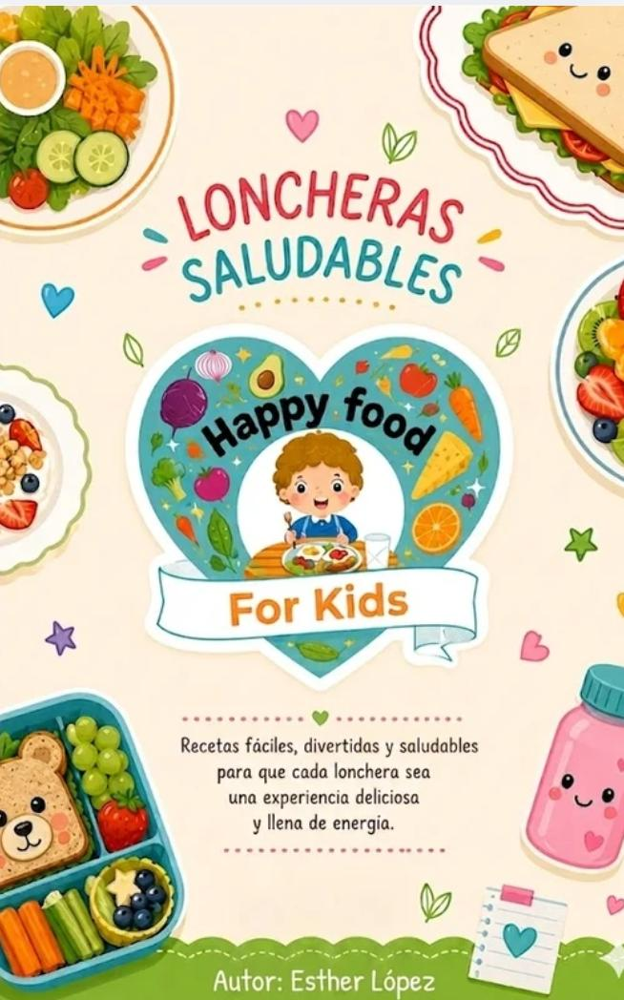

Aprende a preparar loncheras saludables, nutritivas y creativas para niños en etapa escolar. Incluye recetas fáciles, ingredientes accesibles y consejos prácticos para mejorar la alimentación infantil.